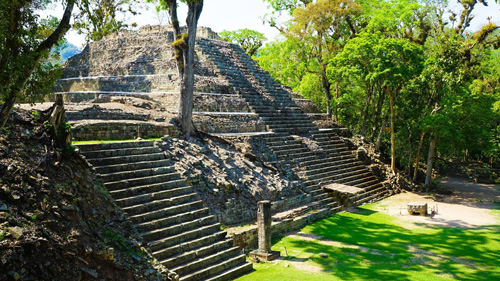
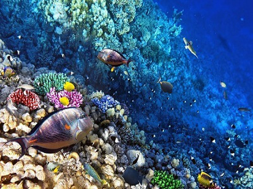
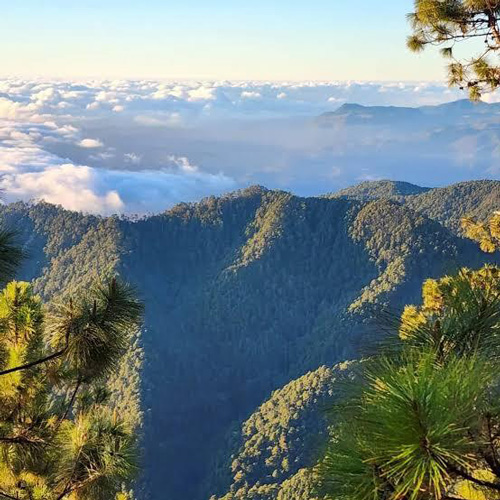

Descubre las perlas encondidas en los lugares más especiales de tu país seas nativo o extranjero, este es tu hogar.
Destacados...


Sobre la h...
Su Biodiversidad
Honduras posee una gran riqueza de flora y fauna gracias a la variedad de sus ecosistemas, que incluyen bosques tropicales, bosques nublados, pinares, manglares, humedales, ríos y arrecifes de coral.
- Flora: Entre las especies vegetales más representativas se encuentran la ceiba, los pinos, los robles, las caobas, las orquídeas y diversas especies de manglares.
- Fauna: Entre los animales que habitan el territorio hondureño destacan la guacamaya roja, el jaguar, el tapir centroamericano, los monos, los tucanes y diversas especies de tortugas, peces y aves.
- Áreas naturales destacadas: Honduras cuenta con espacios de gran importancia ecológica, como la Reserva de la Biosfera del Río Plátano, el Parque Nacional Pico Bonito y el Parque Nacional Celaque. Además, las Islas de la Bahía poseen importantes arrecifes de coral.
Su Clima
El clima de Honduras es predominantemente tropical, aunque presenta variaciones según la región, la altitud y la cercanía al mar.
- Zona norte: presenta temperaturas cálidas, alta humedad y lluvias abundantes, especialmente en la costa caribeña.
- Zona central y montañosa: tiene temperaturas más frescas debido a la altitud.
- Zona sur: suele ser más cálida y presenta una estación seca más marcada.
- Estación lluviosa: generalmente se extiende de mayo a octubre, aunque puede variar según la región.
- Estación seca: suele abarcar de noviembre a abril, con diferencias locales.
Su Moneda
La moneda oficial de Honduras es el lempira hondureño, cuyo símbolo es L y cuyo código internacional es HNL. Esta moneda se utiliza para las transacciones comerciales y las actividades económicas dentro del territorio nacional. El nombre de la moneda proviene de Lempira, un líder indígena lenca reconocido por su resistencia frente a la conquista española. El Banco Central de Honduras es la institución responsable de la emisión de billetes y monedas nacionales.
Su Ubicación Geográfica
Honduras es un país ubicado en América Central. Limita al oeste con Guatemala, al suroeste con El Salvador y al sureste con Nicaragua. Su costa norte está bañada por el mar Caribe y su costa sur tiene acceso al océano Pacífico a través del golfo de Fonseca. Cuenta con una superficie aproximada de 112,492 km² y su capital es Tegucigalpa. Su territorio se caracteriza por la presencia de montañas, valles, llanuras costeras, ríos e islas. Esta variedad geográfica influye en el clima, la biodiversidad y las actividades económicas del país.